Mục lục
Bản đồ Tỉnh Trà Vinh
Tỉnh Trà Vinh có 9 đơn vị hành chính cấp huyện. Trong đó bao gồm 1 thành phố, 1 thị xã và 7 huyện: thành phố Trà Vinh, thị xã Duyên Hải, huyện Càng Long, huyện Cầu Kè, huyện Cầu Ngang, huyện Châu Thành, huyện Duyên Hải, huyện Tiểu Cần, huyện Trà Cú.
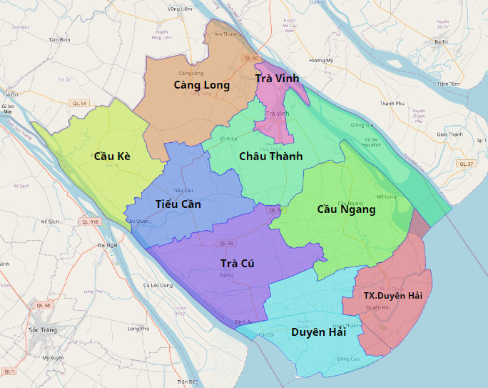Bản đồ hành chính Tỉnh Trà Vinh
Bản đồ giao thông Tỉnh Trà Vinh

Bản đồ giao thông Tỉnh Trà Vinh
Bản đồ Thị xã Duyên Hải, Trà Vinh
Thị xã Duyên Hải có 7 đơn vị hành chính cấp phường xã. Trong đó bao gồm 2 phường, 5 xã. Phường 1, Phường 2, Xã Dân Thành, Xã Hiệp Thạnh, Xã Long Hữu, Xã Long Toàn, Xã Trường Long Hòa.
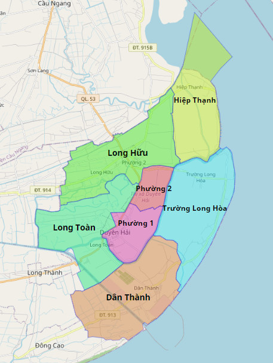Bản đồ hành chính Thị xã Duyên Hải
Bản đồ giao thông Thị xã Duyên Hải

Bản đồ giao thông Thị xã Duyên Hải
Bản đồ Huyện Duyên Hải, Trà Vinh
Huyện Duyên Hải có 7 đơn vị hành chính cấp phường xã. Trong đó bao gồm 1 thị trấn, 6 xã. Thị trấn Long Thành (huyện lỵ), Xã Đôn Châu, Xã Đôn Xuân, Xã Đông Hải, Xã Long Khánh, Xã Long Vĩnh, Xã Ngũ Lạc.
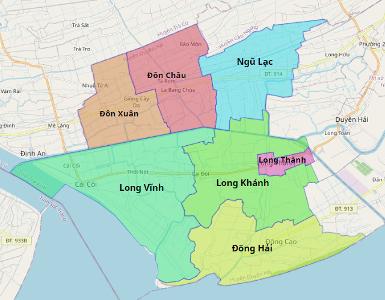Bản đồ hành chính Huyện Duyên Hải
Bản đồ giao thông Huyện Duyên Hải

Bản đồ giao thông Huyện Duyên Hải
Bản đồ Huyện Trà Cú, Trà Vinh
Huyện Trà Cú có 17 đơn vị hành chính cấp phường xã. Trong đó bao gồm 2 thị trấn, 15 xã. Thị trấn Trà Cú (huyện lỵ), Thị trấn Định An, Xã An Quảng Hữu, Xã Đại An, Xã Định An, Xã Hàm Giang, Xã Hàm Tân, Xã Kim Sơn, Xã Long Hiệp, Xã Lưu Nghiệp Anh, Xã Ngãi Xuyên, Xã Ngọc Biên, Xã Phước Hưng, Xã Tân Hiệp, Xã Tân Sơn, Xã Tập Sơn, Xã Thanh Sơn.

Bản đồ hành chính Huyện Trà Cú
Bản đồ giao thông Huyện Trà Cú
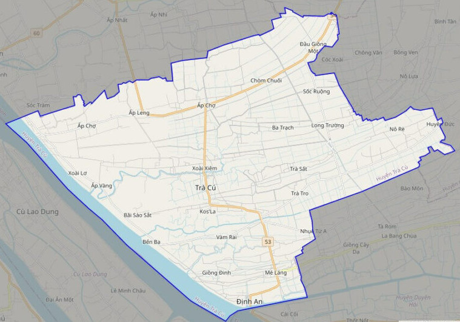Bản đồ giao thông Huyện Trà Cú
Bản đồ Huyện Cầu Ngang, Trà Vinh
Huyện Cầu Ngang có 15 đơn vị hành chính cấp phường xã. Trong đó bao gồm 2 thị trấn, 13 xã. Thị trấn Cầu Ngang (huyện lỵ), Thị trấn Mỹ Long, Xã Hiệp Hòa, Xã Hiệp Mỹ Đông, Xã Hiệp Mỹ Tây, Xã Kim Hòa, Xã Long Sơn, Xã Mỹ Hòa, Xã Mỹ Long Bắc, Xã Mỹ Long Nam, Xã Nhị Trường, Xã Thạnh Hòa Sơn, Xã Thuận Hòa, Xã Trường Thọ, Xã Vĩnh Kim.
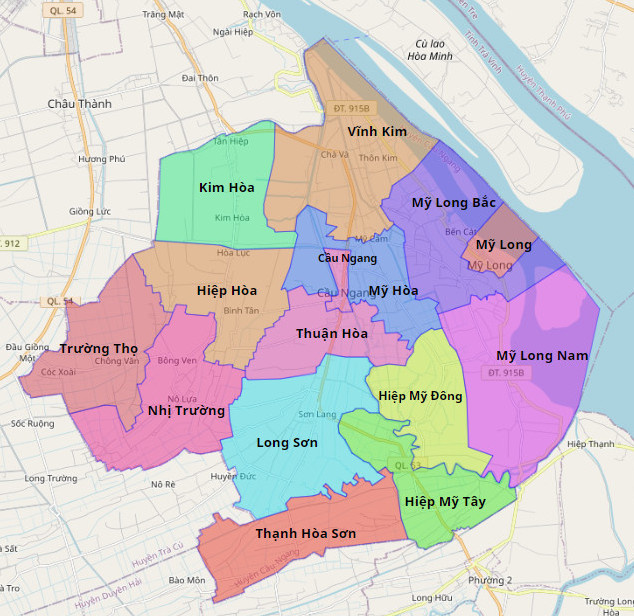Bản đồ hành chính Huyện Cầu Ngang
Bản đồ giao thông Huyện Cầu Ngang
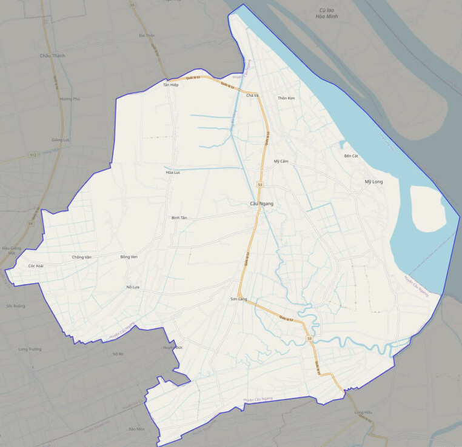Bản đồ giao thông Huyện Cầu Ngang
Bản đồ Huyện Châu Thành, Trà Vinh
Huyện Châu Thành có 14 đơn vị hành chính cấp phường xã. Trong đó bao gồm 1 thị trấn, 13 xã. Thị trấn Châu Thành (huyện lỵ), Xã Đa Lộc, Xã Hòa Lợi, Xã Hòa Minh, Xã Hòa Thuận, Xã Hưng Mỹ, Xã Long Hòa, Xã Lương Hòa, Xã Lương Hòa A, Xã Mỹ Chánh, Xã Nguyệt Hóa, Xã Phước Hảo, Xã Song Lộc, Xã Thanh Mỹ.

Bản đồ hành chính Huyện Châu Thành
Bản đồ giao thông Huyện Châu Thành
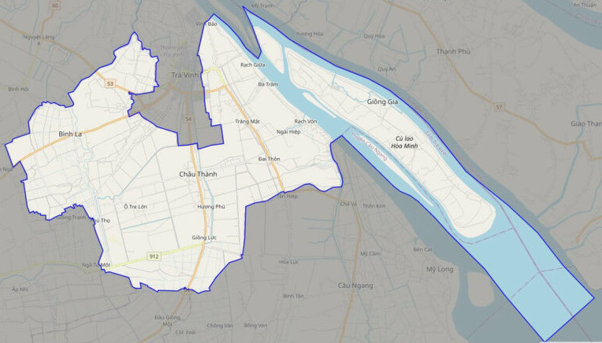Bản đồ giao thông Huyện Châu Thành
Bản đồ Huyện Tiểu Cần, Trà Vinh
Huyện Tiểu Cần có 11 đơn vị hành chính cấp phường xã. Trong đó bao gồm 2 thị trấn, 9 xã. Thị trấn Tiểu Cần (huyện lỵ), Thị trấn Cầu Quan, Xã Hiếu Trung, Xã Hiếu Tử, Xã Hùng Hòa, Xã Long Thới, Xã Ngãi Hùng, Xã Phú Cần, Xã Tân Hòa, Xã Tân Hùng, Xã Tập Ngãi.
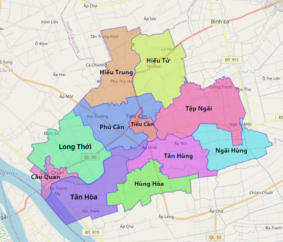Bản đồ hành chính Huyện Tiểu Cần
Bản đồ giao thông Huyện Tiểu Cần

Bản đồ giao thông Huyện Tiểu Cần
Bản đồ Huyện Cầu Kè, Trà Vinh
Huyện Cầu Kè có 11 đơn vị hành chính cấp phường xã. Trong đó bao gồm 1 thị trấn, 10 xã. Thị trấn Cầu Kè (huyện lỵ), Xã An Phú Tân, Xã Châu Điền, Xã Hòa Ân, Xã Hòa Tân, Xã Ninh Thới, Xã Phong Phú, Xã Phong Thạnh, Xã Tam Ngãi, Xã Thạnh Phú, Xã Thông Hòa.
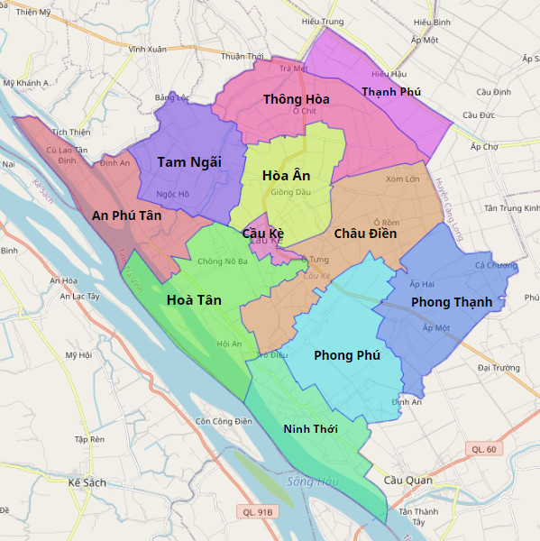Bản đồ hành chính Huyện Cầu Kè
Bản đồ giao thông Huyện Cầu Kè
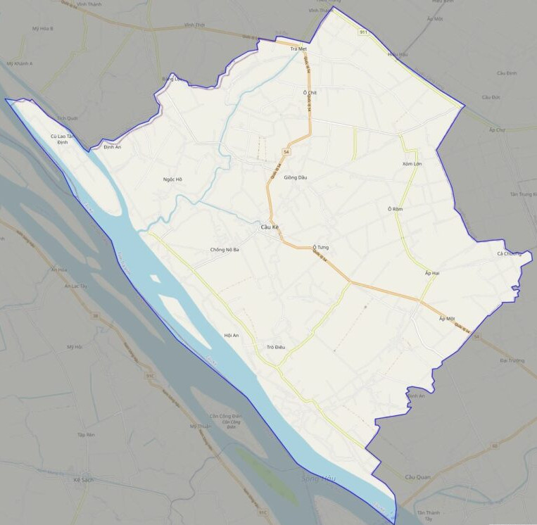Bản đồ giao thông Huyện Cầu Kè
Bản đồ Huyện Càng Long, Trà Vinh
Huyện Càng Long có 14 đơn vị hành chính cấp phường xã. Trong đó bao gồm 1 thị trấn, 13 xã. Thị trấn Càng Long (huyện lỵ), Xã An Trường, Xã An Trường A, Xã Bình Phú, Xã Đại Phúc, Xã Đại Phước, Xã Đức Mỹ, Xã Huyền Hội, Xã Mỹ Cẩm, Xã Nhị Long, Xã Nhị Long Phú, Xã Phương Thạnh, Xã Tân An, Xã Tân Bình.

Bản đồ hành chính Huyện Càng Long
Bản đồ giao thông Huyện Càng Long
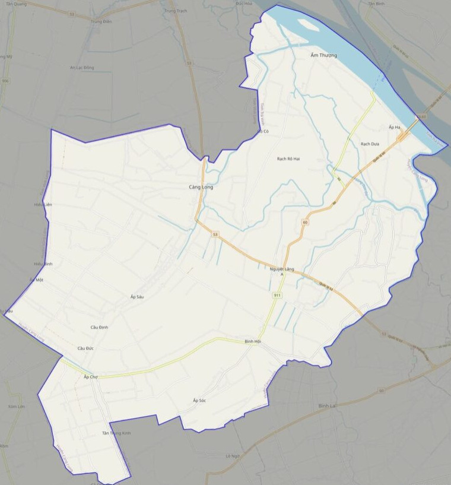Bản đồ giao thông Huyện Càng Long
Bản đồ Thành phố Trà Vinh, Trà Vinh
Thành phố Trà Vinh có 10 đơn vị hành chính cấp phường xã. Trong đó bao gồm 9 phường, 1 xã. Phường 1, Phường 2, Phường 3, Phường 4, Phường 5, Phường 6, Phường 7, Phường 8, Phường 9, Xã Long Đức.
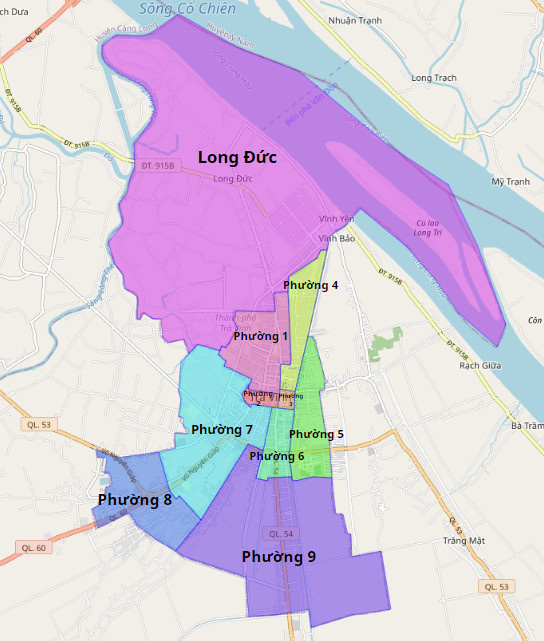Bản đồ hành chính Thành phố Trà Vinh
Bản đồ giao thông Thành phố Trà Vinh

Bản đồ giao thông Thành phố Trà Vinh